Introduction to Regression Models
Overview of Unit
Learning Objectives
Use of root mean square error (RMSE) in training and validation sets for model performance evaluation
The General Linear Model as a machine learning model
- Extensions to categorical variables (Dummy coding features)
- Extensions to interactive and non-linear effects of features
K Nearest Neighbor (KNN)
- Hyperparameter \(k\)
- Scaling predictors
- Extensions to categorical variables
Readings
- James et al. (2023) Chapter 3, pp 59 - 109
Lecture Videos
- Lecture 1: Overview ~ 13 mins
- Lecture 2: The Simple Linear Model, Part 1 ~ 16 mins
- Lecture 3: The Simple Linear Model, Part 2 ~ 12 mins
- Lecture 4: Extension to Multiple Predictors ~ 15 mins
- Lecture 5: Extension to Categorical Predictors
- Lecture 6: Extension to Interactions and Non-Linear Effects
- Lecture 7: Introduction to KNN
- Lecture 8: Distance and Scaling in KNN
- Lecture 9: KNN with Ames
- Discussijn
Application Assignment and Quiz
Post questions to the Slack channel for application assignments.
Submit the application assignment here and complete the unit quiz by 8 pm on Wednesday, February 7th
Our goal in this unit is to build a machine learning regression model that can accurately (we hope) predict the sale_price for future sales of houses (in Iowa? more generally?)
To begin this project we need to:
- Set up conflicts policies
- We will hide this in future units
- Load the packages we will need. I am shifting here to only loading
tidymodelsandtidyversebecause the other functions we need are only called occassionally (so we will call them by namespace to see how that “feels”.)
- source additional class functions libraries
- We will hide this in future units
- set display options
- We will hide this in future units
- handle paths
- Set up function to class ames data (copied with one improvement from last unit)
- Warnings should be considered errors until investigated. Once investigated, they can be ignored. To explicitly ignore, use
suppressWarnings()
- Open the cleaned training set
data_trn <-
read_csv(here::here(path_data, "ames_clean_class_trn.csv"),
col_types = cols()) |>
class_ames() |>
glimpse()Rows: 1,465
Columns: 10
$ sale_price <dbl> 105000, 126000, 115000, 120000, 99500, 112000, 122000, 12…
$ gr_liv_area <dbl> 896, 882, 864, 836, 918, 1902, 900, 1225, 1728, 858, 1306…
$ lot_area <dbl> 11622, 8400, 10500, 2280, 7892, 8930, 9819, 9320, 13260, …
$ year_built <dbl> 1961, 1970, 1971, 1975, 1979, 1978, 1967, 1959, 1962, 195…
$ overall_qual <fct> 5, 4, 4, 7, 6, 6, 5, 4, 5, 5, 3, 5, 4, 5, 3, 5, 2, 6, 5, …
$ garage_cars <dbl> 1, 2, 0, 1, 1, 2, 1, 0, 0, 0, 0, 1, 2, 2, 1, 1, 2, 2, 1, …
$ garage_qual <fct> ta, ta, no_garage, ta, ta, ta, ta, no_garage, no_garage, …
$ ms_zoning <fct> res_high, res_low, res_low, res_low, res_low, res_med, re…
$ lot_config <fct> inside, corner, fr2, fr2, inside, inside, inside, inside,…
$ bldg_type <fct> one_fam, one_fam, one_fam, town_inside, town_end, duplex,…- Open the cleaned validation set
data_val <- read_csv(here::here(path_data, "ames_clean_class_val.csv"),
col_types = cols()) |>
class_ames() |>
glimpse()Rows: 490
Columns: 10
$ sale_price <dbl> 215000, 189900, 189000, 171500, 212000, 164000, 394432, 1…
$ gr_liv_area <dbl> 1656, 1629, 1804, 1341, 1502, 1752, 1856, 1004, 1092, 106…
$ lot_area <dbl> 31770, 13830, 7500, 10176, 6820, 12134, 11394, 11241, 168…
$ year_built <dbl> 1960, 1997, 1999, 1990, 1985, 1988, 2010, 1970, 1971, 197…
$ overall_qual <fct> 6, 5, 7, 7, 8, 8, 9, 6, 5, 6, 7, 9, 8, 8, 7, 8, 6, 5, 5, …
$ garage_cars <dbl> 2, 2, 2, 2, 2, 2, 3, 2, 1, 2, 2, 2, 2, 3, 2, 3, 1, 1, 2, …
$ garage_qual <fct> ta, ta, ta, ta, ta, ta, ta, ta, ta, ta, ta, ta, ta, ta, t…
$ ms_zoning <fct> res_low, res_low, res_low, res_low, res_low, res_low, res…
$ lot_config <fct> corner, inside, inside, inside, corner, inside, corner, c…
$ bldg_type <fct> one_fam, one_fam, one_fam, one_fam, town_end, one_fam, on…NOTE: Remember, I have held back an additional test set that we will use only once to evaluate the final model that we each develop in this unit.
We will also make a dataframe to track validation error across the models we fit
We will fit regression models with various model configurations.
These configurations will differ with respect to statistical algorithm:
- A General Linear Model (lm) - a parametric approach
- K Nearest Neighbor (KNN) - a non-parametric approach
These configurations will differ with respect to the features
- Single feature (i.e., simple regression)
- Various sets of multiple features that vary by:
- Raw predictors used
- Transformations applied to those predictors as part of feature engineering
- Inclusion (or not) of interactions among features
- The KNN model configurations will also differ with respect to its hyperparameter- \(k\)
To build models that will work well in new data (e.g., the data that I have held back from you so far):
We have split the remaining data into a training and validation set for our own use during model building
We will fit models in train
We will evaluate them in validation
Remember that we:
- Used a 75/25 stratified (on
sale_price) split of the data at the end of cleaning EDA to create training and validation sets - Are only using a subset of the available predictors. The same ones I used for the EDA unit
You will work with all of my predictors and all the predictors you used for your EDA when you do the application assignment for this unit
Pause for a moment to answer this question:
Question: Why do we need independent validation data to select the best model configuration? In other words, why cant we just fit and evaluate all of the models in our one training set?
Show Answer
These models will all overfit the dataset within which they are fit to some degree.
In other words, they will predict both systematic variance (the DGP) and some noise in
the training set. However, they will differ in how much they overfit the training set.
As the models get more flexible they will have the potential to overfit to a greater degree.
Models with a larger number of features (e.g., more predictors, features based on interactions
as well as raw predictors) will overfit to a greater degree. All other things equal, the
non-parametric KNN will also be more flexible than the general linear model so it may
overfit to a greater degree as well if the true DGP is linear on the features.
Therefore, just because a model fits the training set well does not mean it will work
well in new data because the noise will be different in every new dataset.
This overfitting will be removed from our performance estimate if we calculate it
with new data (the validation set).Let’s take a quick look at the available raw predictors in the training set
| Name | data_trn |
| Number of rows | 1465 |
| Number of columns | 10 |
| _______________________ | |
| Column type frequency: | |
| factor | 5 |
| numeric | 5 |
| ________________________ | |
| Group variables | None |
Variable type: factor
| skim_variable | n_missing | complete_rate | n_unique | top_counts |
|---|---|---|---|---|
| overall_qual | 0 | 1 | 10 | 5: 424, 6: 350, 7: 304, 8: 176 |
| garage_qual | 0 | 1 | 5 | ta: 1312, no_: 81, fa: 57, gd: 13 |
| ms_zoning | 0 | 1 | 7 | res: 1157, res: 217, flo: 66, com: 13 |
| lot_config | 0 | 1 | 5 | ins: 1095, cor: 248, cul: 81, fr2: 39 |
| bldg_type | 0 | 1 | 5 | one: 1216, tow: 108, dup: 63, tow: 46 |
Variable type: numeric
| skim_variable | n_missing | complete_rate | mean | sd | p0 | p25 | p50 | p75 | p100 | skew | kurtosis |
|---|---|---|---|---|---|---|---|---|---|---|---|
| sale_price | 0 | 1 | 180696.15 | 78836.41 | 12789 | 129500 | 160000 | 213500 | 745000 | 1.64 | 4.60 |
| gr_liv_area | 0 | 1 | 1506.84 | 511.44 | 438 | 1128 | 1450 | 1759 | 5642 | 1.43 | 5.19 |
| lot_area | 0 | 1 | 10144.16 | 8177.55 | 1476 | 7500 | 9375 | 11362 | 164660 | 11.20 | 182.91 |
| year_built | 0 | 1 | 1971.35 | 29.65 | 1880 | 1953 | 1972 | 2000 | 2010 | -0.54 | -0.62 |
| garage_cars | 1 | 1 | 1.78 | 0.76 | 0 | 1 | 2 | 2 | 4 | -0.26 | 0.10 |
Remember from our modeling EDA that we have some issues to address as part of our feature engineering:
- Missing values
- Possible transformation of
sale_price - Possible transformation of other numeric predictors
- We will need to use some feature engineering techniques to handle categorical variables
- We may need to consider interactions among features
All of this will be accomplished with a recipe
But first, let’s discuss/review our first statistical algorithm
The Simple (General) Linear Model (LM)
We will start with only a quick review of the use of the simple (one feature) linear model (LM) as a machine learning model because you should be very familiar with this statistical model at this point
- \(Y = \beta_0 + \beta_1*X_1 + \epsilon\)
Applied to our regression problem, we might fit a model such as:
- \(sale\_price = \beta_0 + \beta_1*gr\_liv\_area + \epsilon\)
The (general) linear model is a parametric model. We need to estimate two parameters using our training set
- \(\beta_0\)
- \(\beta_1\)
You already know how to do this using lm() in base R. However, we will use the tidymodels modeling approach.
We use tidymodels because:
- It provides a consistent interface to many (and growing numbers) of statistical algorithms
- It provides very strong and easy feature engineering routines (e.g., missing data, scaling, transformations, near-zero variance, collinearity) via recipes
- It simplifies model performance evaluation using resampling approaches (that you don’t know yet!)
- It supports numerous performance metrics
- It is tightly integrated within the tidyverse
- It is under active development and support
- You can see documentation for all of the packages at the tidymodels website. It is worth a quick review now to get a sense of what is available
To fit a model with a specific configuration, we need to:
- Set up a feature engineering recipe
- Use the recipe to make a feature matrix
prep()it with training databake()it with data you want to use to calculate feature matrix
- Select and define the statistical algorithm
- Fit the algorithm in the feature matrix in our training set
These steps are accomplished with functions from the recipes and parsnip packages.
We will start with a simple model configuration
- General linear model (lm)
- One feature (raw
gr_liv_area) - Fit in training data
Set up a VERY SIMPLE feature engineering recipe
- Include outcome on the left size of
~ - Include raw predictors (not yet features) on the right side of
~.
- Indicate the training data
- We can see a summary of it to verify it is doing what you expect by calling
recsummary(rec)
We can then prep the recipe and bake the data to make our feature matrix from the training dataset
- Again, remember we always prep a recipe with training data but use the prepped recipe to bake any data
- In this instance we will prep with
data_trnand then bakedata_trnso that we have features from our training set to train/fit the model.
- And now we can bake the training data to make a feature matrix
You should always review the feature matrix to make sure it looks as you expect
- includes outcome (
sale_price) - includes expected feature (
gr_liv_area) - Sample size is as expected
- No missing data
| Name | feat_trn |
| Number of rows | 1465 |
| Number of columns | 2 |
| _______________________ | |
| Column type frequency: | |
| numeric | 2 |
| ________________________ | |
| Group variables | None |
Variable type: numeric
| skim_variable | n_missing | complete_rate | mean | sd | p0 | p25 | p50 | p75 | p100 | skew | kurtosis |
|---|---|---|---|---|---|---|---|---|---|---|---|
| gr_liv_area | 0 | 1 | 1506.84 | 511.44 | 438 | 1128 | 1450 | 1759 | 5642 | 1.43 | 5.19 |
| sale_price | 0 | 1 | 180696.15 | 78836.41 | 12789 | 129500 | 160000 | 213500 | 745000 | 1.64 | 4.60 |
Now let’s consider the statistical algorithm
tidymodelsbreaks this apart into two pieces for clarity- First, you specify the broad category of algorithm
- e.g.,
linear_reg(),nearest_neighbor(),logistic_reg()
- e.g.,
- Next, you
set_mode()to indicate if if the model is for regression or classification broadly- Not needed if the engine can only be used for one mode (e.g.,
'linear_reg()is only for regression.
- Not needed if the engine can only be used for one mode (e.g.,
- Then you select a function from a specific R package (or base R) that will implement the algorithm
tidymodelscalls this setting the engine- e.g.,
lm,kknn,glm,glmnet
You can see the available engines (and modes: regression vs. classification) for the broad classes of algorithms
We will work with many of these algorithms later in the course
# A tibble: 7 × 2
engine mode
<chr> <chr>
1 lm regression
2 glm regression
3 glmnet regression
4 stan regression
5 spark regression
6 keras regression
7 brulee regression# A tibble: 2 × 2
engine mode
<chr> <chr>
1 kknn classification
2 kknn regression # A tibble: 7 × 2
engine mode
<chr> <chr>
1 glm classification
2 glmnet classification
3 LiblineaR classification
4 spark classification
5 keras classification
6 stan classification
7 brulee classification# A tibble: 5 × 2
engine mode
<chr> <chr>
1 rpart classification
2 rpart regression
3 C5.0 classification
4 spark classification
5 spark regression # A tibble: 6 × 2
engine mode
<chr> <chr>
1 ranger classification
2 ranger regression
3 randomForest classification
4 randomForest regression
5 spark classification
6 spark regression # A tibble: 6 × 2
engine mode
<chr> <chr>
1 keras classification
2 keras regression
3 nnet classification
4 nnet regression
5 brulee classification
6 brulee regression You can load even more engines from the discrim package. We will use some of these later too. You need to load the package to use these engines.
# A tibble: 4 × 2
engine mode
<chr> <chr>
1 MASS classification
2 mda classification
3 sda classification
4 sparsediscrim classification# A tibble: 1 × 2
engine mode
<chr> <chr>
1 klaR classification# A tibble: 2 × 2
engine mode
<chr> <chr>
1 klaR classification
2 naivebayes classificationYou can also better understand how the engine will be called using translate()
Not useful here but will be with more complicated algorithms
Let’s combine our feature matrix with an algorithm to fit a model in our training set using only raw gr_liv_area as a feature
Note the specification of
- The category of algorithm
- The engine (no need to set mode of engine b/c
lmare only for the regression mode) - The use of the
.to indicate all features in the matrix.- not that useful here because there is only one feature:
gr_liv_area - will be useful when we have many features in the matrix
- not that useful here because there is only one feature:
- We use the the feature matrix (rather than raw data) from the training set to fit the model.
- category of algorithm
- engine
- use of
.for all features and use of feature matrix from training set
We can get the parameter estimates, standard errors, and statistical tests for each \(\beta\) = 0 for this model using tidy() from the broom package (loaded as part of the tidyverse)
There are a variety of ways to pull out the estimates for each feature (and intercept)
Option 1: Pull all estimates from the tidy object
Option 2: Extract a single estimate using $ and row number. Be careful that order of features won’t change! This assumes the feature coefficient for the relevant feature is always the second coefficient.
Option 3: Filter tidy df to the relevant row (using term ==) and pull the estimate. Safer!
Option 4: Write a function if we plan to do this a lot. We include this function in the fun_ml.R script in our repo. Better still (safe and code efficient)!
and then use this function
Regardless of the method, we now have a simple parametric model for sale_price
\(\hat{sale\_price} = 1.6561\times 10^{4} + 108.9 * gr\_liv\_area\)
We can get the predicted values for sale_price (i.e., \(\hat{sale\_price}\)) in our validation set using predict()
However, we first need to make a feature matrix for our validation set
- We use the same recipe that we previously prepped with training data (
data_trn) - But now we bake the validation data,
data_val
As always, we should skim these new features
- Sample size matches what we expect for validation set
- No missing data
- Includes expected outcome and features
| Name | feat_val |
| Number of rows | 490 |
| Number of columns | 2 |
| _______________________ | |
| Column type frequency: | |
| numeric | 2 |
| ________________________ | |
| Group variables | None |
Variable type: numeric
| skim_variable | n_missing | complete_rate | mean | sd | p0 | p25 | p50 | p75 | p100 | skew | kurtosis |
|---|---|---|---|---|---|---|---|---|---|---|---|
| gr_liv_area | 0 | 1 | 1493.0 | 483.78 | 480 | 1143.5 | 1436 | 1729.5 | 3608 | 0.92 | 1.16 |
| sale_price | 0 | 1 | 178512.8 | 75493.59 | 35311 | 129125.0 | 160000 | 213000.0 | 556581 | 1.42 | 2.97 |
Now we can get predictions using our model with validation features
predict() returns a dataframe with one column named .pred and one row for every observation in dataframe (e.g., validation feature set)
We can visualize how well this model performs in the validation set by plotting predicted sale_price (\(\hat{sale\_price}\)) vs. sale_price (ground truth in machine learning terminology) for these data
We might do this a lot so let’s write a function. We have also included this function in fun_ml.R
Perfect performance would have all the points right on the dotted line (same value for actual and predicted outcome)
- Our model doesn’t do that well yet. Not surprising
- Pattern also has some indication of fanning of residuals AND some non-linearity with higher outcome scores that suggests need for a power transformation of outcome (e.g., log)
- This is consistent with our earlier modeling EDA
- Perhaps not that bad here b/c both
sale_priceandgr_liv_areawere positively skewed - We will need consider this eventually
We can quantify model performance by selecting a performance metric
- The
yardstickpackage within thetidymodelsframework supports calculation of many performance metrics for regression and classification models - See the list of all currently available metrics
Root mean square error (RMSE) is a common performance metric for regression models
- You focused on a related metric, sum of squared error (SSE), in PSY 610/710
- RMSE simply divides SSE by N (to get mean squared error; MSE) and then takes the square root to return the metric to the original units for the outcome variable
- It is easy to calculate using
rmse_vec()from theyardstickpackage
Let’s record how well this model performed in validation so we can compare it to subsequent models
error_val <- bind_rows(error_val,
tibble(model = "simple linear model",
rmse_val = rmse_vec(truth = feat_val$sale_price,
estimate = predict(fit_lm_1,
feat_val)$.pred)))
error_val# A tibble: 1 × 2
model rmse_val
<chr> <dbl>
1 simple linear model 51375.NOTE: I will continue to bind RMSE to this dataframe for newer models but plan to hide this code chuck to avoid distractions. You can reuse this code repeatedly to track your own models if you like. (Perhaps we should write a function??)
For explanatory purposes, we might want to visualize the relationship between a feature and the outcome (in addition to examining the parameter estimates and the associated statistical tests)
- Here is a plot of \(\hat{sale\_price}\) by
gr_liv_areasuperimposed over a scatterplot of the raw data from the validation set
- As expected, there is a moderately strong positive relationship between
gr_liv_areaandsale_price.
- We can also again see the heteroscadasticity in the errors that might be corrected by a power transformation of
sale_price(orgr_liv_area)
Extension of LM to Multiple Predictors
We can improve model performance by moving from simple linear model to a linear model with multiple features derived from multiple predictors
We have many other numeric variables available to use, even in this pared down version of the dataset.
[1] "sale_price" "gr_liv_area" "lot_area" "year_built" "overall_qual"
[6] "garage_cars" "garage_qual" "ms_zoning" "lot_config" "bldg_type" Let’s expand our model to also include lot_area, year_built, and garage_cars
Again, we need:
- A feature engineering recipe
- Training (and eventually validation) feature matrices
- An algorithm to fit in training feature matrix
With the addition of new predictors, we now have a feature engineering task
- We have missing data on
garage_carsin the training set - We need to decide how we will handle it
A simple solution is to do median imputation - substitute the median of the non-missing scores for any missing score.
- This is fast and easy to understand
- It works OK (but there are certainly better options that we will consider later in the course)
- see other options in Step Functions - Imputation section on
tidymodelswebsite
- see other options in Step Functions - Imputation section on
- There is only one missing value so it likely doesn’t matter much anyway
Let’s add this to our recipe. All of the defaults are appropriate but you should see ?step_impute_median() to review them
- Notice we now list four predictors for our recipe using
+between them
Now we need to
- First prep recipe
- I am going to stop using
training =at this point. Remember, we prep recipes with training data.
- Next, bake the training data with prepped recipe to get training features
- I am going to stop using
new_data =but remember, we can bake any dataset to make features for that dataset.
- And take a quick look at the features
- Sample size is correct
- 4 features and the outcome variable
- All features are numeric
- No missing data for
garage_qual
| Name | feat_trn |
| Number of rows | 1465 |
| Number of columns | 5 |
| _______________________ | |
| Column type frequency: | |
| numeric | 5 |
| ________________________ | |
| Group variables | None |
Variable type: numeric
| skim_variable | n_missing | complete_rate | mean | sd | p0 | p25 | p50 | p75 | p100 | skew | kurtosis |
|---|---|---|---|---|---|---|---|---|---|---|---|
| gr_liv_area | 0 | 1 | 1506.84 | 511.44 | 438 | 1128 | 1450 | 1759 | 5642 | 1.43 | 5.19 |
| lot_area | 0 | 1 | 10144.16 | 8177.55 | 1476 | 7500 | 9375 | 11362 | 164660 | 11.20 | 182.91 |
| year_built | 0 | 1 | 1971.35 | 29.65 | 1880 | 1953 | 1972 | 2000 | 2010 | -0.54 | -0.62 |
| garage_cars | 0 | 1 | 1.78 | 0.76 | 0 | 1 | 2 | 2 | 4 | -0.26 | 0.10 |
| sale_price | 0 | 1 | 180696.15 | 78836.41 | 12789 | 129500 | 160000 | 213500 | 745000 | 1.64 | 4.60 |
- And finally, bake the validation data with the same prepped recipe to get validation features
- Notice that here we are now baking
data_val
- And take a quick look
- Correct sample size (N = 490)
- 4 features and outcome
- All numeric
- No missing data
| Name | feat_val |
| Number of rows | 490 |
| Number of columns | 5 |
| _______________________ | |
| Column type frequency: | |
| numeric | 5 |
| ________________________ | |
| Group variables | None |
Variable type: numeric
| skim_variable | n_missing | complete_rate | mean | sd | p0 | p25 | p50 | p75 | p100 | skew | kurtosis |
|---|---|---|---|---|---|---|---|---|---|---|---|
| gr_liv_area | 0 | 1 | 1493.00 | 483.78 | 480 | 1143.5 | 1436.0 | 1729.50 | 3608 | 0.92 | 1.16 |
| lot_area | 0 | 1 | 10462.08 | 10422.55 | 1680 | 7500.0 | 9563.5 | 11780.75 | 215245 | 15.64 | 301.66 |
| year_built | 0 | 1 | 1971.08 | 30.96 | 1875 | 1954.0 | 1975.0 | 2000.00 | 2010 | -0.66 | -0.41 |
| garage_cars | 0 | 1 | 1.74 | 0.76 | 0 | 1.0 | 2.0 | 2.00 | 4 | -0.24 | 0.22 |
| sale_price | 0 | 1 | 178512.82 | 75493.59 | 35311 | 129125.0 | 160000.0 | 213000.00 | 556581 | 1.42 | 2.97 |
Now let’s combine our algorithm and training features to fit this model configuration with 4 features
- the
.is a bit more useful now
This yields these parameter estimates (which as we know from 610/710 were selected to minimize SSE in the training set):
# A tibble: 5 × 5
term estimate std.error statistic p.value
<chr> <dbl> <dbl> <dbl> <dbl>
1 (Intercept) -1665041. 89370. -18.6 1.14e- 69
2 gr_liv_area 76.8 2.62 29.3 3.56e-149
3 lot_area 0.514 0.146 3.51 4.60e- 4
4 year_built 854. 46.2 18.5 7.66e- 69
5 garage_cars 22901. 1964. 11.7 4.09e- 30Here is our parametric model
- \(\hat{sale\_price} = -1.6650409\times 10^{6} + 76.8 * gr\_liv\_area + 0.5 * lot\_area + 854.3 * year\_built + 2.29008\times 10^{4} * garage\_cars\)
Compared with our previous simple regression model:
- \(\hat{sale\_price} = 1.6561\times 10^{4} + 108.9 * gr\_liv\_area\)
Of course, these four features are correlated both with sale_price but also with each other
Let’s look at correlations in the training set.
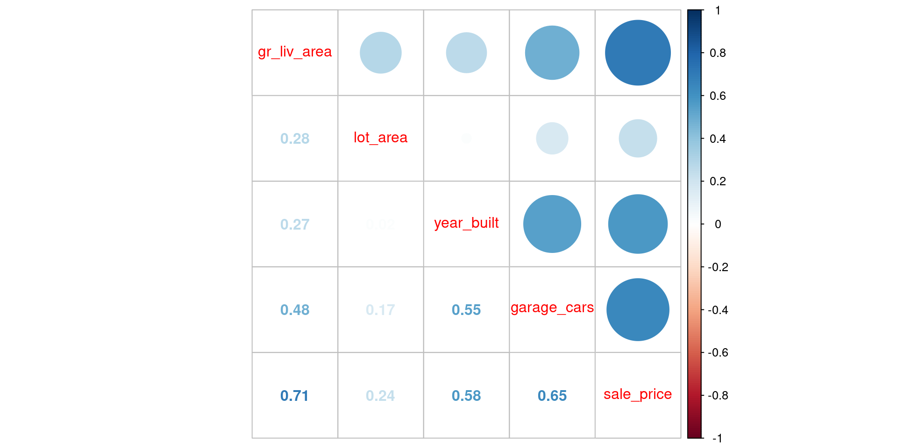Question: What are the implications of the correlations among many of these predictors?
Show Answer
The multiple regression model coefficients represent unique effects, controlling for
all other variables in the model. You can see how the unique effect of `gr_liv_area`
is smaller than its overall effect from the simple regression. This also means
that the overall predictive strength of the model will not be a sum of the effects
of each predictor considered in isolation - it will likely be less. Also, if the
correlations are high, problems with multicollinearity will emerge. This will yield
large standard errors which means that the models will start to have more variance when
fit in different training datasets! We will soon learn about other regularized
versions of the GLM that do not have these issues with correlated predictors.How well does this more complex model perform in validation? Let’s compare the previous and current visualizations of \(sale\_price\) vs. \(\hat{sale\_price}\)
- Looks like the errors are smaller (closer to the diagonal line that would represent prefect prediction)
- Clear signs of non-linearity are now present as well. Time for more Modeling EDA!!
Coding sidebar: Notice the use of plot_grid() from the cowplot package to make side by side plots. This also required returning the individual plots as objects (just assign to a object name, e.g., plot_1)
Let’s compare model performance for the two models using RMSE in the validation set
- The one feature simple linear model
- The four feature linear model. A clear improvement!
- Let’s bind the new performance metric to our results table
# A tibble: 2 × 2
model rmse_val
<chr> <dbl>
1 simple linear model 51375.
2 4 feature linear model 39903.Given the non-linearity suggested by the truth vs. estimate plots, we might wonder if we could improve the fit if we transformed our features to be closer to normal
There are a number of recipe functions that do transformations (see Step Functions - Individual Transformations)
We will apply
step_YeoJohnson(), which is similar to a Box-Cox transformation but can be more broadly applied because the scores don’t need to be strictly positive
Let’s do it all again, now with transformed features!
- Define the feature engineering recipe
- Prep the recipe with training set
Use prepped recipe to bake the training set into features
Notice the features are now less skewed (but
sale_priceis still skewed)
| Name | feat_trn |
| Number of rows | 1465 |
| Number of columns | 5 |
| _______________________ | |
| Column type frequency: | |
| numeric | 5 |
| ________________________ | |
| Group variables | None |
Variable type: numeric
| skim_variable | n_missing | complete_rate | mean | sd | p0 | p25 | p50 | p75 | p100 | skew | kurtosis |
|---|---|---|---|---|---|---|---|---|---|---|---|
| gr_liv_area | 0 | 1 | 5.22 | 0.16 | 4.60 | 5.11 | 5.23 | 5.33 | 5.86 | 0.00 | 0.12 |
| lot_area | 0 | 1 | 14.10 | 1.14 | 10.32 | 13.69 | 14.20 | 14.64 | 21.65 | 0.08 | 5.46 |
| year_built | 0 | 1 | 1971.35 | 29.65 | 1880.00 | 1953.00 | 1972.00 | 2000.00 | 2010.00 | -0.54 | -0.62 |
| garage_cars | 0 | 1 | 2.12 | 0.98 | 0.00 | 1.11 | 2.37 | 2.37 | 5.23 | -0.03 | 0.04 |
| sale_price | 0 | 1 | 180696.15 | 78836.41 | 12789.00 | 129500.00 | 160000.00 | 213500.00 | 745000.00 | 1.64 | 4.60 |
Use same prepped recipe to bake the validation set into features
Again, features are less skewed
| Name | feat_val |
| Number of rows | 490 |
| Number of columns | 5 |
| _______________________ | |
| Column type frequency: | |
| numeric | 5 |
| ________________________ | |
| Group variables | None |
Variable type: numeric
| skim_variable | n_missing | complete_rate | mean | sd | p0 | p25 | p50 | p75 | p100 | skew | kurtosis |
|---|---|---|---|---|---|---|---|---|---|---|---|
| gr_liv_area | 0 | 1 | 5.22 | 0.16 | 4.65 | 5.11 | 5.23 | 5.32 | 5.66 | -0.17 | 0.19 |
| lot_area | 0 | 1 | 14.14 | 1.17 | 10.57 | 13.69 | 14.24 | 14.72 | 22.44 | 0.11 | 6.12 |
| year_built | 0 | 1 | 1971.08 | 30.96 | 1875.00 | 1954.00 | 1975.00 | 2000.00 | 2010.00 | -0.66 | -0.41 |
| garage_cars | 0 | 1 | 2.06 | 0.96 | 0.00 | 1.11 | 2.37 | 2.37 | 5.23 | 0.01 | 0.24 |
| sale_price | 0 | 1 | 178512.82 | 75493.59 | 35311.00 | 129125.00 | 160000.00 | 213000.00 | 556581.00 | 1.42 | 2.97 |
- Fit model
- View truth vs. estimate plot
- and look at the error
# A tibble: 3 × 2
model rmse_val
<chr> <dbl>
1 simple linear model 51375.
2 4 feature linear model 39903.
3 4 feature linear model with YJ 41660.- That didn’t help at all. Error still high and still non-linearity in plot.
We may need to consider
- a transformation of
sale_price(We will leave that to you for the application assignment if you are daring!) - or a different algorithm that can handle non-linear relationships better
Extension to Categorical Predictors
Many important predictors in our models may be categorical (nominal and some ordinal predictors)
- Some statistical algorithms (e.g., random forest) can accept even nominal predictors as features without any further feature engineering
- But many cannot. Linear models cannot.
- The type of feature engineering may differ for nominal vs. ordinal categorical predictors
- For nominal categorical predictors:
- We need to learn a common approach to transform them to numeric features - dummy coding. We will learn the concept in general AND how to accomplish within a feature engineering recipe.
- For ordinal predictors:
- We can treat them like numeric predictors
- We can treat them like nominal categorical predictors
- See article on Categorical Predictors on the
tidymodelswebsite for more details
Dummy Coding
For many algorithms, we will need to use feature engineering to convert a categorical predictor to numeric features. One common technique is to use dummy coding. When dummy coding a predictor, we transform the original categorical predictor with m levels into m-1 dummy coded features.
To better understand how and why we do this, lets consider a version of ms_zoning in the Ames dataset.
agri commer float indus res_high res_low res_med
2 13 66 1 9 1157 217 We will recode ms_zoning to have only 3 levels to make our example simple (though dummy codes can be used for predictors with any number of levels)
- Make a df (dataframe) with only
sale_priceandms_zoning fct_collapse()from theforcatspackage is our preferred way to collapse levels of a factor. Seefct_recode()for more generic recoding of levels.- We could have left this line out and float would have stayed as a level named float
- Remove original
ms_zoningpredictor
Take a look at the new predictor
Question: Why can’t we simply recode each level with a different consecutive value (e.g., commercial = 1, floating =2 , residential = 3)?
Imagine fitting a straight line to predict sale_price from ms_zoning3 using these three different ways to arbitrarily assign numbers to levels.
data_dummy |>
mutate(ms_zoning3 = case_when(ms_zoning3 == "residential" ~ 1,
ms_zoning3 == "commercial" ~ 2,
ms_zoning3 == "floating" ~ 3)) |>
ggplot(aes(x = ms_zoning3, y = sale_price)) +
geom_bar(stat="summary", fun = "mean")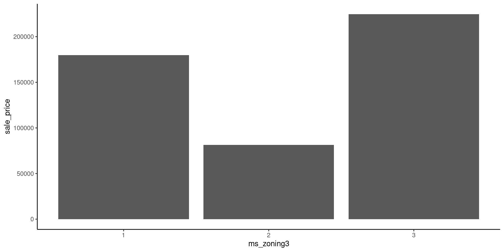
Dummy coding resolves this issue.
- When using dummy codes, we transform (i.e., feature engineer) our original m-level categorical predictor to m-1 dummy features.
- Each of these m-1 features represents a contrast between a specific level of the categorical variable and a reference level
- The full set of m-1 features represents the overall effect of the categorical predictor variable.
- We assign values of 0 or 1 to each observation on each feature in a meaningful pattern (see below)
For example, with our three-level predictor: ms_zoning3
- We need 2 dummmy features (d1, d2) to represent this 3-level categorical predictor
- Dummy feature 1 is coded 1 for residential and 0 for all other levels
- Dummy feature 2 is coded 1 for floating and 0 for all other levels
Here is this coding scheme displayed in a table
# A tibble: 3 × 3
ms_zoning3 d1 d2
<chr> <dbl> <dbl>
1 commercial 0 0
2 residential 1 0
3 floating 0 1With this coding:
- Commercial properties are coded 0 for both d1 and d2.
- This means that commercial properties will become the reference level against which both residential and floating village are compared.
- Because we are focused on prediction, the choice of reference level is mostly arbitrary. For explanatory goals, you might consider which level is best suited to be the reference.
- There is much deeper coverage of dummy and other contrast coding in 610/710
We can add these two features manually to the data frame and view a handful of observations to make this coding scheme more concrete
# A tibble: 8 × 4
sale_price ms_zoning3 d1 d2
<dbl> <fct> <dbl> <dbl>
1 105000 residential 1 0
2 126000 residential 1 0
3 13100 commercial 0 0
4 115000 residential 1 0
5 149500 floating 0 1
6 40000 commercial 0 0
7 120000 residential 1 0
8 151000 floating 0 1If we now fit a model where we predict sale_price from these two dummy coded features, each feature would represent the contrast of the mean sale_price for the level coded 1 vs. the mean sale_price for the level that is coded 0 for all features (i.e., commercial)
- d1 is the contrast of mean
sale_pricefor residential vs. commercial - d2 is the contrast of mean
sale_pricefor floating vs. commercial - The combined effect of these two features represents the overall effect of
ms_zoning3onsale_price
Lets do this quickly in base R using lm() as you have done previously in 610.
Call:
lm(formula = sale_price ~ d1 + d2, data = data_dummy)
Residuals:
Min 1Q Median 3Q Max
-166952 -50241 -20241 31254 565259
Coefficients:
Estimate Std. Error t value Pr(>|t|)
(Intercept) 81523 19409 4.200 2.83e-05 ***
d1 98219 19521 5.031 5.47e-07 ***
d2 143223 21635 6.620 5.03e-11 ***
---
Signif. codes: 0 '***' 0.001 '**' 0.01 '*' 0.05 '.' 0.1 ' ' 1
Residual standard error: 77640 on 1462 degrees of freedom
Multiple R-squared: 0.03151, Adjusted R-squared: 0.03018
F-statistic: 23.78 on 2 and 1462 DF, p-value: 6.858e-11The mean sale price of residential properties is 9.8219^{4} dollars higher than commercial properties.
The mean sale price of floating villages is 1.43223^{5} dollars higher than commercial properties.
To understand this conceptually, it is easiest to visualize the linear model that would predict sale_price with these two dichotomous features.
- There are only three columns of
sale_pricebecause the only possible values ford1andd2(which are both dichotomous) are- 0,0 (commercial)
- 1,0 (residential)
- 0,1 (floating village)
- This regression with two features yields a prediction plane (displayed)
- The left/right tilt of the plane will be the parameter estimate for d1 and it is the contrast of residential vs. commercial
- The front/back tilt of the plane will be the parameter estimate for d2 and it is the contrast of floating village vs. commercial
Statistical sidebar:
- Any full rank (# levels - 1) set of features regardless of coding system predicts exactly the same (e.g., dummy, helmert, contrast coding)
- Preference among coding systems is simply to get single df contrasts of theoretical importance (i.e., for explanation rather than prediction)
- Final (mth) dummy feature is not included b/c its is completely redundant (perfectly multicollinear) with other dummy features. This would also prevent a linear model from fitting (‘dummy variable trap’).
- However, some statistical algorithms do not have problems with perfect multicollinearity (e.g., LASSO, ridge regression).
- For these algorithms, you will sometimes see modified version of dummy coding called one-hot coding.
- This approach uses one additional dummy coded feature for the final category.
- We won’t spend time on this but you should be familiar with the term b/c it is often confused with dummy coding.
- For these algorithms, you will sometimes see modified version of dummy coding called one-hot coding.
Coding Sidebar
When creating dummy coded features from factors that have levels with infrequent observations, you may occasionally end up with novel levels in your validation or test sets that were not present in your training set.
- This will cause you issues.
- These issues are mostly resolved if you make sure to explicitly list all possible levels for a factor when classing that factor in the training data, even if the level doesn’t exist in the training data.
- We provide more detail on this issue in an appendix.
Nominal Predictors
Now that we understand how to use dummy coding to feature engineer nominal predictors, let’s consider some potentially important ones that are available to us.
We can discuss if any look promising.
Lets return first to ms_zoning
data_trn |>
plot_categorical("ms_zoning", "sale_price") |>
cowplot::plot_grid(plotlist = _, ncol = 2)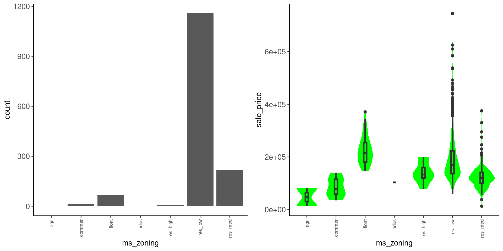
We might:
- Represent it with 6 dummy features (because there are 7 raw levels) but many of the categories are very low n - won’t account for much variance?
- Combine all the commercial categories (agri, commer, indus), which would take care of most of the low n groups. They also all tend to have the lower prices.
- Combine all the residential to get a better feature to variance accounted ratio. They all tend to have similar prices on average and res_high is also pretty low n.
Data dictionary entry: Identifies the general zoning classification of the sale.
- agri: Agriculture
- commer: Commercial
- float: Floating Village Residential
- indus: Industrial
- res_high: Residential High Density
- res_med: Residential Medium Density
- res_low: Residential Low Density
lot_config
data_trn |>
plot_categorical("lot_config", "sale_price") |>
cowplot::plot_grid(plotlist = _, ncol = 2)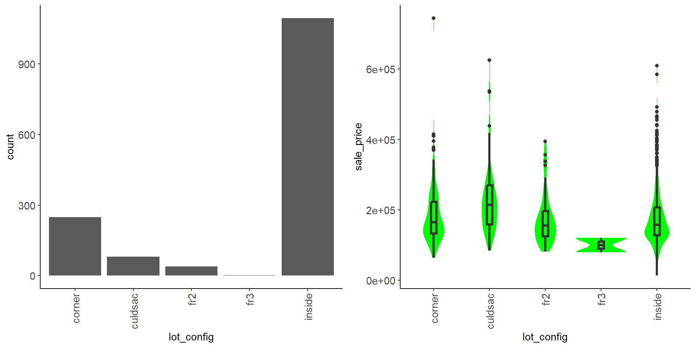
We see that:
- Most are inside lots, some of the lot categories are low n
- Median
sale_priceis not very different between configurations - Not very promising but could help some (particularly given the large sample size)
Data dictionary entry: Lot configuration
- inside: Inside lot
- corner: Corner lot
- culdsac: Cul-de-sac
- fr2: Frontage on 2 sides of property
- fr3: Frontage on 3 sides of property
bldg_type
data_trn |>
plot_categorical("bldg_type", "sale_price") |>
cowplot::plot_grid(plotlist = _, ncol = 2)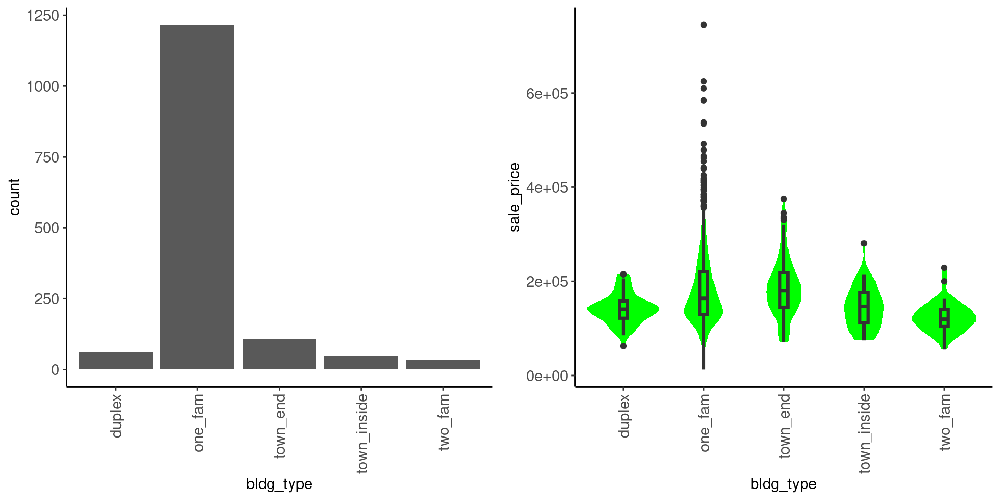
We see that:
- Most of the houses are in one category - one_fam
- There is not much difference in median
sale_priceamong categories - Not very promising
Data dictionary entry: Type of dwelling
- one_fam: Single-family Detached
- two_fam: Two-family Conversion; originally built as one-family dwelling
- duplex: Duplex
- town_end: Townhouse End Unit
- town_inside: Townhouse Inside Unit
Let’s do some feature engineering with ms_zoning. We can now do this formally in a recipe so that it can be used in our modeling workflow.
- First, if you noticed earlier, there are some levels for
ms_zoningthat are pretty infrequent. Lets make sure bothdata_trnanddata_valhave all levels set for this factor.
[1] "agri" "commer" "float" "indus" "res_high" "res_low" "res_med" [1] "commer" "float" "indus" "res_high" "res_low" "res_med" - As expected, we are missing a level (
agri) indata_val. Lets fix that here
[Note: Ideally, you would go back to cleaning EDA and add this level to the full dataset and then re-split into training, validation and test. This is a sloppy shortcut!]
With that fixed, let’s proceed:
- We will collapse categories down to three levels (commercial, residential, floating village) as before but now using
step_mutate()combined withfct_collapse()to do this inside of our recipe.
- We will convert to dummy features using
step_dummy(). The first level of the factor will be set to the reference level when we callstep_dummy(). step_dummy()is a poor choice for function name. It actually uses whatever contrast coding we have set up in R. However, the default is are dummy coded contrasts (R calls this treatment contrasts). See?contrastsandoptions("contrasts")for more info.
rec <-
recipe(sale_price ~ gr_liv_area + lot_area + year_built + garage_cars + ms_zoning,
data = data_trn) |>
step_impute_median(garage_cars) |>
step_mutate(ms_zoning = fct_collapse(ms_zoning,
"residential" = c("res_high", "res_med", "res_low"),
"commercial" = c("agri", "commer", "indus"),
"floating" = "float")) |>
step_dummy(ms_zoning)Coding Sidebar
You should also read more about some other step_() functions that you might use for categorical predictors: - step_other() to combine all low frequency categories into a single “other” category. - step_unknown() to assign missing values their own category - You can use selector functions. For example, you could make dummy variables out of all of your factors in one step using step_dummy(all_nominal_predictors()).
See the Step Functions - Dummy Variables and Encoding section on the tidymodels website for additional useful functions.
We have also described these in the section on factor steps in Appendix 1
Let’s see if the addition of ms_zoning helped
- Notice the addition of the dummy coded features to the feature matrix
- Notice the removal of the factor
ms_zoning
- skim
| Name | feat_trn |
| Number of rows | 1465 |
| Number of columns | 7 |
| _______________________ | |
| Column type frequency: | |
| numeric | 7 |
| ________________________ | |
| Group variables | None |
Variable type: numeric
| skim_variable | n_missing | complete_rate | mean | sd | p0 | p25 | p50 | p75 | p100 | skew | kurtosis |
|---|---|---|---|---|---|---|---|---|---|---|---|
| gr_liv_area | 0 | 1 | 1506.84 | 511.44 | 438 | 1128 | 1450 | 1759 | 5642 | 1.43 | 5.19 |
| lot_area | 0 | 1 | 10144.16 | 8177.55 | 1476 | 7500 | 9375 | 11362 | 164660 | 11.20 | 182.91 |
| year_built | 0 | 1 | 1971.35 | 29.65 | 1880 | 1953 | 1972 | 2000 | 2010 | -0.54 | -0.62 |
| garage_cars | 0 | 1 | 1.78 | 0.76 | 0 | 1 | 2 | 2 | 4 | -0.26 | 0.10 |
| sale_price | 0 | 1 | 180696.15 | 78836.41 | 12789 | 129500 | 160000 | 213500 | 745000 | 1.64 | 4.60 |
| ms_zoning_floating | 0 | 1 | 0.05 | 0.21 | 0 | 0 | 0 | 0 | 1 | 4.38 | 17.22 |
| ms_zoning_residential | 0 | 1 | 0.94 | 0.23 | 0 | 1 | 1 | 1 | 1 | -3.86 | 12.90 |
| Name | feat_val |
| Number of rows | 490 |
| Number of columns | 7 |
| _______________________ | |
| Column type frequency: | |
| numeric | 7 |
| ________________________ | |
| Group variables | None |
Variable type: numeric
| skim_variable | n_missing | complete_rate | mean | sd | p0 | p25 | p50 | p75 | p100 | skew | kurtosis |
|---|---|---|---|---|---|---|---|---|---|---|---|
| gr_liv_area | 0 | 1 | 1493.00 | 483.78 | 480 | 1143.5 | 1436.0 | 1729.50 | 3608 | 0.92 | 1.16 |
| lot_area | 0 | 1 | 10462.08 | 10422.55 | 1680 | 7500.0 | 9563.5 | 11780.75 | 215245 | 15.64 | 301.66 |
| year_built | 0 | 1 | 1971.08 | 30.96 | 1875 | 1954.0 | 1975.0 | 2000.00 | 2010 | -0.66 | -0.41 |
| garage_cars | 0 | 1 | 1.74 | 0.76 | 0 | 1.0 | 2.0 | 2.00 | 4 | -0.24 | 0.22 |
| sale_price | 0 | 1 | 178512.82 | 75493.59 | 35311 | 129125.0 | 160000.0 | 213000.00 | 556581 | 1.42 | 2.97 |
| ms_zoning_floating | 0 | 1 | 0.05 | 0.22 | 0 | 0.0 | 0.0 | 0.00 | 1 | 4.07 | 14.58 |
| ms_zoning_residential | 0 | 1 | 0.93 | 0.25 | 0 | 1.0 | 1.0 | 1.00 | 1 | -3.51 | 10.33 |
- Now lets fit a model with these features
- plot it
- And evaluate it
# A tibble: 4 × 2
model rmse_val
<chr> <dbl>
1 simple linear model 51375.
2 4 feature linear model 39903.
3 4 feature linear model with YJ 41660.
4 6 feature linear model w/ms_zoning 39846.- Removing Yeo Johnson transformation but adding dummy coded
ms_zoningmay have helped a little
Question: Will the addition of new predictors/features to a model always reduce RMSE in train? in validation?
Show Answer
As you know, the estimation procedure in linear models is OLS. Parameter estimates
are derived to minimize the SSE in the data set in which they are derived. For this
reason, adding a predictor will never increase RMSE in the training set and it will
usually lower it even when it is not part of the DGP. However, this is not true in
validation. A predictor will only meaningfully lower RMSE in validation if it is
part of the DGP. Also, a bad predictor could even increase RMSE in validation due to
overfitting.Ordinal Predictors
We have two paths to pursue for ordinal predictors
- We can treat them like nominal predictors (e.g., dummy code)
- We can treat them like numeric predictors (either raw or with an added transformation if needed)
Let’s consider overall_qual
data_trn |>
plot_categorical("overall_qual", "sale_price") |>
cowplot::plot_grid(plotlist = _, ncol = 2)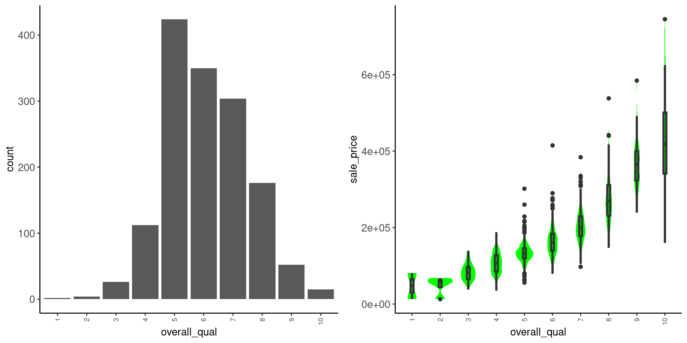
Observations:
- Low frequency for low and to some degree high quality response options. If dummy coding, may want to collapse some (1-2)
- There is a monotonic relationship (mostly linear) with
sale_price. Treat as numeric? - Not skewed so doesn’t likely need to be transformed if treated as numeric
- Numeric will take one feature vs. many (9?) features for dummy codes.
- Dummy codes are more flexible but we may not need this flexibility (and unnecessary flexibility increases overfitting)
Let’s add overall_qual to our model as numeric
Remember that this predictor was ordinal so we paid special attention to the order of the levels when we classed this factor. Lets confirm they are in order
To convert overall_qual to numeric (with levels in the specified order), we can use another simple mutate inside our recipe.
rec <-
recipe(sale_price ~ ~ gr_liv_area + lot_area + year_built + garage_cars +
ms_zoning + overall_qual, data = data_trn) |>
step_impute_median(garage_cars) |>
step_mutate(ms_zoning = fct_collapse(ms_zoning,
"residential" = c("res_high", "res_med", "res_low"),
"commercial" = c("agri", "commer", "indus"),
"floating" = "float"),
overall_qual = as.numeric(overall_qual)) |>
step_dummy(ms_zoning)Coding Sidebar
There is a step function called step_ordinalscore() but it requires that the factor is classed as an ordered factor. It is also more complicated than needed in our opinion. Just use as.numeric()
Let’s evaluate this model
- Making features
- Skipping the skim to save space (we promised we checked it previously!)
- Fitting model
- Plotting results
- Quantifying held out error
# A tibble: 5 × 2
model rmse_val
<chr> <dbl>
1 simple linear model 51375.
2 4 feature linear model 39903.
3 4 feature linear model with YJ 41660.
4 6 feature linear model w/ms_zoning 39846.
5 7 feature linear model 34080.- That helped!
Extensions to Interactive Models and Non-linear Models
Interactions
There may be interactive effects among our predictors
- Some statistical algorithms (e.g., KNN) can naturally accommodate interactive effects without any feature engineering
- Linear models cannot
- Nothing to fear, tidymodels makes it easy to feature engineer interactions
- [BUT - as we will learn, we generally think that if you expect lots of interactions, the linear model may not be the best model to use]
For example, it may be that the relationship between year_built and sale_price depends on overall_qual.
- Old houses are expensive if they are in good condition
- but old houses are very cheap if they are in poor condition
In the tidymodels framework
- Coding interactions is done by feature engineering, not by formula (Note that formula does not change below in recipe)
- This seems appropriate to us as we are making new features to represent interactions
- We still use an R formula like interface to specify the interaction term features that will be created
- see more details on the
tidymodelswebsite
rec <-
recipe(sale_price ~ ~ gr_liv_area + lot_area + year_built + garage_cars +
ms_zoning + overall_qual, data = data_trn) |>
step_impute_median(garage_cars) |>
step_mutate(ms_zoning = fct_collapse(ms_zoning,
"residential" = c("res_high", "res_med", "res_low"),
"commercial" = c("agri", "commer", "indus"),
"floating" = "float"),
overall_qual = as.numeric(overall_qual)) |>
step_dummy(ms_zoning) |>
step_interact(~ overall_qual:year_built)Let’s prep, bake, fit, and evaluate!
- Note the new interaction term (we just skim
feat_trnhere) - Named using “x” to specify the interaction
| Name | feat_trn |
| Number of rows | 1465 |
| Number of columns | 9 |
| _______________________ | |
| Column type frequency: | |
| numeric | 9 |
| ________________________ | |
| Group variables | None |
Variable type: numeric
| skim_variable | n_missing | complete_rate | mean | sd | p0 | p25 | p50 | p75 | p100 | skew | kurtosis |
|---|---|---|---|---|---|---|---|---|---|---|---|
| gr_liv_area | 0 | 1 | 1506.84 | 511.44 | 438 | 1128 | 1450 | 1759 | 5642 | 1.43 | 5.19 |
| lot_area | 0 | 1 | 10144.16 | 8177.55 | 1476 | 7500 | 9375 | 11362 | 164660 | 11.20 | 182.91 |
| year_built | 0 | 1 | 1971.35 | 29.65 | 1880 | 1953 | 1972 | 2000 | 2010 | -0.54 | -0.62 |
| garage_cars | 0 | 1 | 1.78 | 0.76 | 0 | 1 | 2 | 2 | 4 | -0.26 | 0.10 |
| overall_qual | 0 | 1 | 6.08 | 1.41 | 1 | 5 | 6 | 7 | 10 | 0.20 | -0.03 |
| sale_price | 0 | 1 | 180696.15 | 78836.41 | 12789 | 129500 | 160000 | 213500 | 745000 | 1.64 | 4.60 |
| ms_zoning_floating | 0 | 1 | 0.05 | 0.21 | 0 | 0 | 0 | 0 | 1 | 4.38 | 17.22 |
| ms_zoning_residential | 0 | 1 | 0.94 | 0.23 | 0 | 1 | 1 | 1 | 1 | -3.86 | 12.90 |
| overall_qual_x_year_built | 0 | 1 | 12015.69 | 2907.93 | 1951 | 9800 | 11808 | 14021 | 20090 | 0.24 | -0.11 |
- fit model
- plot
- calculate held out error
# A tibble: 6 × 2
model rmse_val
<chr> <dbl>
1 simple linear model 51375.
2 4 feature linear model 39903.
3 4 feature linear model with YJ 41660.
4 6 feature linear model w/ms_zoning 39846.
5 7 feature linear model 34080.
6 8 feature linear model w/interaction 32720.- That helped!
You can also feature engineer interactions with nominal (and ordinal predictors treated as nominal) predictors
- The nominal predictors should first be converted to dummy code features
- You will indicate the interactions using the variable names that will be assigned to these dummy code features
- Use
starts_with()ormatches()to make it easy if there are many features associated with a categorical predictor - Can use “~ .^2” to include all two way interactions (be careful if you have dummy coded features!)
Let’s code an interaction between ms_zoning & year_built.
- Old homes are cool
- Old commercial spaces are never cool
- Maybe this is why the main effect of
ms_zoningwasn’t useful
rec <-
recipe(sale_price ~ ~ gr_liv_area + lot_area + year_built + garage_cars +
ms_zoning + overall_qual, data = data_trn) |>
step_impute_median(garage_cars) |>
step_mutate(ms_zoning = fct_collapse(ms_zoning,
"residential" = c("res_high", "res_med", "res_low"),
"commercial" = c("agri", "commer", "indus"),
"floating" = "float"),
overall_qual = as.numeric(overall_qual)) |>
step_dummy(ms_zoning) |>
step_interact(~ overall_qual:year_built) |>
step_interact(~ starts_with("ms_zoning_"):year_built) - prep, bake
- Yup, we have two new interaction features as expected
| Name | feat_trn |
| Number of rows | 1465 |
| Number of columns | 11 |
| _______________________ | |
| Column type frequency: | |
| numeric | 11 |
| ________________________ | |
| Group variables | None |
Variable type: numeric
| skim_variable | n_missing | complete_rate | mean | sd | p0 | p25 | p50 | p75 | p100 | skew | kurtosis |
|---|---|---|---|---|---|---|---|---|---|---|---|
| gr_liv_area | 0 | 1 | 1506.84 | 511.44 | 438 | 1128 | 1450 | 1759 | 5642 | 1.43 | 5.19 |
| lot_area | 0 | 1 | 10144.16 | 8177.55 | 1476 | 7500 | 9375 | 11362 | 164660 | 11.20 | 182.91 |
| year_built | 0 | 1 | 1971.35 | 29.65 | 1880 | 1953 | 1972 | 2000 | 2010 | -0.54 | -0.62 |
| garage_cars | 0 | 1 | 1.78 | 0.76 | 0 | 1 | 2 | 2 | 4 | -0.26 | 0.10 |
| overall_qual | 0 | 1 | 6.08 | 1.41 | 1 | 5 | 6 | 7 | 10 | 0.20 | -0.03 |
| sale_price | 0 | 1 | 180696.15 | 78836.41 | 12789 | 129500 | 160000 | 213500 | 745000 | 1.64 | 4.60 |
| ms_zoning_floating | 0 | 1 | 0.05 | 0.21 | 0 | 0 | 0 | 0 | 1 | 4.38 | 17.22 |
| ms_zoning_residential | 0 | 1 | 0.94 | 0.23 | 0 | 1 | 1 | 1 | 1 | -3.86 | 12.90 |
| overall_qual_x_year_built | 0 | 1 | 12015.69 | 2907.93 | 1951 | 9800 | 11808 | 14021 | 20090 | 0.24 | -0.11 |
| ms_zoning_floating_x_year_built | 0 | 1 | 90.29 | 415.84 | 0 | 0 | 0 | 0 | 2009 | 4.38 | 17.22 |
| ms_zoning_residential_x_year_built | 0 | 1 | 1860.03 | 453.95 | 0 | 1948 | 1968 | 1997 | 2010 | -3.83 | 12.78 |
- Fit model
- Plot
- Quantify held out error
error_val <- error_val |>
bind_rows(tibble(model = "10 feature linear model w/interactions",
rmse_val = rmse_vec(feat_val$sale_price,
predict(fit_lm_10,
feat_val)$.pred)))
error_val# A tibble: 7 × 2
model rmse_val
<chr> <dbl>
1 simple linear model 51375.
2 4 feature linear model 39903.
3 4 feature linear model with YJ 41660.
4 6 feature linear model w/ms_zoning 39846.
5 7 feature linear model 34080.
6 8 feature linear model w/interaction 32720.
7 10 feature linear model w/interactions 32708.- Not really any better
- Shouldn’t just include all interactions without reason
- Either you have done EDA to support them or
- You have substantive interest in them (explanatory question)
- If you want all interactions, use a statistical algorithm that supports those relationships without feature engineering (e.g., KNN, random forest and other decision trees)
Non-linear Models
We may also want to model non-linear effects of our predictors
- Some non-parametric models can accommodate non-linear effects without feature engineering (e.g., KNN, Random Forest).
- Non-linear effects can be accommodated in a linear model with feature engineering
- Transformations of Y or X. See Step Functions - Individual Transformations on
tidymodelswebsite - Ordinal predictors can be coded with dummy variables
- Numeric predictors can be split at threshold
- Polynomial contrasts for numeric or ordinal predictors (see
step_poly())
- Transformations of Y or X. See Step Functions - Individual Transformations on
- We will continue to explore these options throughout the course
KNN Regression
K Nearest Neighbor
- Is a non-parametric regression and classification statistical algorithm
- It does not yield specific parameter estimates for features/predictors (or statistical tests for those parameter estimates)
- There are still ways to use it to address explanatory questions (visualizations, model comparisons, feature importance)
- Very simple but also powerful (listed commonly among top 10 algorithms)
- By powerful, it is quite flexible and can accommodate many varied DGPs without the need for much feature engineering with its predictors
- May not need most transformations of X or Y
- May not need to model interactions
- Still need to handle missing data, outliers, and categorical predictors
K Nearest Neighbor
- Algorithm “memorizes” the training set (lazy learning)
- Lazy learning is most useful for large, continuously changing datasets with few attributes (features) that are commonly queried (e.g., online recommendation systems)
- Prediction for any new observation is based on \(k\) most similar observations from the dataset
- \(k\) provides direct control over the bias-variance trade-off for this algorithm
To better understand KNN let’s simulate training data for three different DGPs (linear - y, polynomial - y2, and step - y3)
Let’s start with a simple example where the DGP for Y is linear on one predictor (X)
DGP: \(y = rnorm(150, x, 10)\)
This figure displays:
- DGP
- Prediction line from a simple linear model
- Red lines to represent three new observations (X = 10, 50, 90) we want to make predictions for via a standard KNN
Question: What would 5-NN predictions look like for each of these three new values of X in the figure above?
KNN can easily accommodate non-linear relationships between numeric predictors and outcomes without any feature engineering for predictors
In fact, it can flexibly handle any shape of relationship
DGP: \(y2 = rnorm(150, x^4 / 800000, 8)\)

DGP: \(y3 = if\_else(x < 40, rnorm(150, 25, 10), rnorm(150, 75, 10))\)
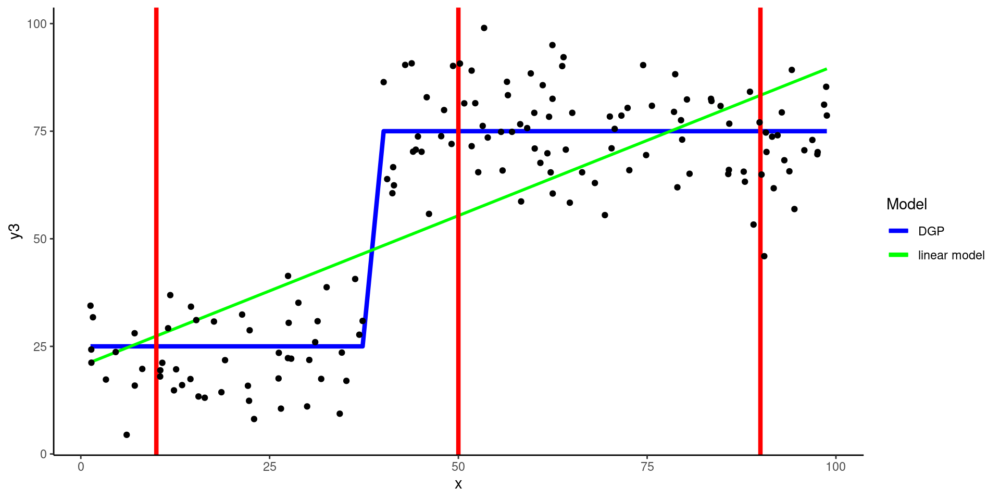The hyperparameter k
KNN is our first example of a statistical algorithm that includes a hyperparameter, in this case \(k\)
Algorithm hyperparameters differ from parameters in that they cannot be estimated while fitting the algorithm to the training set
They must be set in advance
k = 5is the default forkknn(), the engine from thekknnpackage that we will use to fit a KNN withintidymodels.- \(kknn()\) weights observations (neighbors) based on distance.
- An option exists for unweighted as well but not likely used much (default is optimal weighting, use it!).
- \(kknn()\) weights observations (neighbors) based on distance.
Using the polynomial DGP above, let’s look at a 5-NN yields
- Note the new category of algorithm, new engine, and the need to set a mode (because KNN can be used for regression and classification)
- We can look in the package documentation to better understand what is being done (
?kknn::train.kknn).
- Set up simple feature engineering recipe and get training features (nothing happening but let’s follow normal routine anyway)
- Fit 5NN
- Get a validation set (a new sample using same polynomial DGP)
data_val_demo <- tibble(x = runif(200, 1, 100),
y = rnorm(200, x, 10),
y_dgp = rnorm(200, x ,0),
y2 = rnorm(200, x^4 / 800000, 8),
y2_dgp = rnorm(200, x^4 / 800000 ,0),
y3 = if_else(x < 40, rnorm(200, 25, 10), rnorm(200, 75, 10)),
y3_dgp = if_else(x < 40, rnorm(200, 25, 0), rnorm(200, 75, 0)))
feat_val_demo <- rec_prep |>
bake(data_val_demo)Display 5NN predictions in validation
- KNN (with
k = 5) does a pretty good job of representing the shape of the DGP (low bias) - KNN displays some (but minimal) evidence of overfitting
- Simple linear model does not perform well (clear/high bias)
- KNN (with
Let’s pause and consider our conceptual understanding of the impact of \(k\) on the bias-variance trade-off
Question: How will the size of k influence model performance (e.g., bias, overfitting/variance)?
Question: How will k = 1 perform in training and validation sets?
Show Answer
k = 1 will perfectly fit the training set. Therefore it is very dependent on the training
set (high variance). It will fit both the DGP and the noise in the training set.
Clearly it will likely not do as well in validation (it will be overfit to training).
k needs to be larger if there is more noise (to average over more cases). k needs
to be smaller if the relationships are complex. (More on choosing k by resampling in
unit 5.k = 1
Fit new model
Recipe and features have not changed
- Set k with
neighbors =
V_ isualize prediction models in Train and Validation
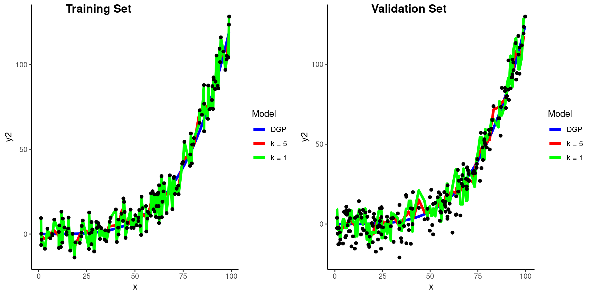Calculate RMSE in validation for two KNN models
k = 1
k = 5
What if we go the other way and increase \(k\) to 75
Visualize prediction models in Train and Validation
#|echo: false
plot_train <- feat_trn_demo |>
bind_cols(data_trn_demo |> select(y, y2_dgp)) |> # add in other outcomes for fig
ggplot(aes(x = x, y = y2)) +
geom_line(aes(x = x, y = y2_dgp, color = "blue"), linewidth = 1.5) +
geom_line(aes(x = x, y = predict(fit_5nn_demo, feat_trn_demo)$.pred,
color = "red"), linewidth = 1.5) +
geom_line(aes(x = x, y = predict(fit_1nn_demo, feat_trn_demo)$.pred,
color = "green"), linewidth = 1.5) +
geom_line(aes(x = x, y = predict(fit_75nn_demo, feat_trn_demo)$.pred,
color = "yellow"), linewidth = 1.5) +
geom_point(aes(y = y2), color = "black") +
scale_color_identity(name = "Model",
breaks = c("blue", "red", "green", "yellow"),
labels = c("DGP", "k = 5", "k = 1", "k = 75"),
guide = "legend")
plot_val <- feat_val_demo |>
bind_cols(data_val_demo |> select(y, y2_dgp)) |> # add in other outcomes for fig
ggplot(aes(x = x, y = y2)) +
geom_line(aes(x = x, y = y2_dgp, color = "blue"), linewidth = 1.5) +
geom_line(aes(x = x, y = predict(fit_5nn_demo, feat_val_demo)$.pred,
color = "red"), linewidth = 1.5) +
geom_line(aes(x = x, y = predict(fit_1nn_demo, feat_val_demo)$.pred,
color = "green"), linewidth = 1.5) +
geom_line(aes(x = x, y = predict(fit_75nn_demo, feat_val_demo)$.pred,
color = "yellow"), linewidth = 1.5) +
geom_point(aes(y = y2), color = "black") +
scale_color_identity(name = "Model",
breaks = c("blue", "red", "green", "yellow"),
labels = c("DGP", "k = 5", "k = 1", "k = 75"),
guide = "legend")
cowplot::plot_grid(plot_train, plot_val,
labels = list("Training Set", "Validation Set"),
ncol = 2, nrow = 1, hjust = -1)Calculate RMSE in validation for three KNN models
This is the bias-variance trade-off in action
k = 1- high variance
k = 5- just right (well better at least)
k = 75- high bias
Distance and Scaling in KNN
Defining “Nearest”
To make a prediction for some new observation, we need to identify the observations from the training set that are nearest to it
Need a distance measure to define “nearest”
IMPORTANT: We care only about:
- Distance between a validation observation and all the training observations
- Need to find the \(k\) observations in training that are nearest to the validation observation (i.e., its neighbors)
- Distance is defined based on these observations’ features, not their outcomes
There are a number of different distance measures available (e.g., Euclidean, Manhattan, Chebyshev, Cosine, Minkowski)
- Euclidean is most commonly used in KNN
Euclidean distance between any two points is an n-dimensional extension of the Pythagorean formula (which applies explicitly with 2 features/2 dimensional space).
\(C^2 = A^2 + B^2\)
\(C = \sqrt{A^2 + B^2}\)
…where C is the distance between two points
The Euclidean distance between 2 points (p and q) in two dimensions (2 predictors, x1 = A, x2 = B)
\(Distance = \sqrt{A^2 + B^2}\)
\(Distance = \sqrt{(q1 - p1)^2 + (q2 - p2)^2}\)
\(Distance = \sqrt{(2 - 1)^2 + (5 - 2)^2}\)
\(Distance = 3.2\)
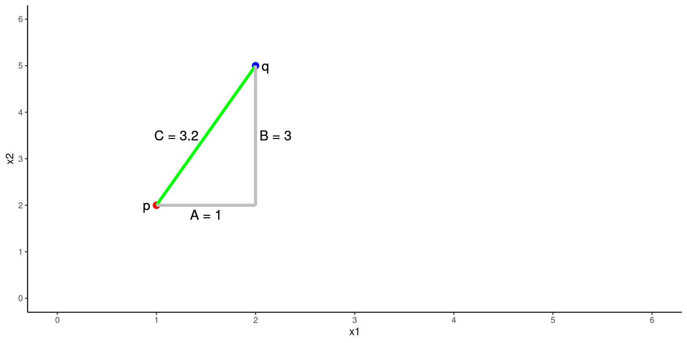One dimensional (one feature) is simply the subtraction of scores on that feature (x1) between p and q
\(Distance = \sqrt{(q1 - p1)^2}\)
\(Distance = \sqrt{(2 - 1)^2}\)
\(Distance = 1\)
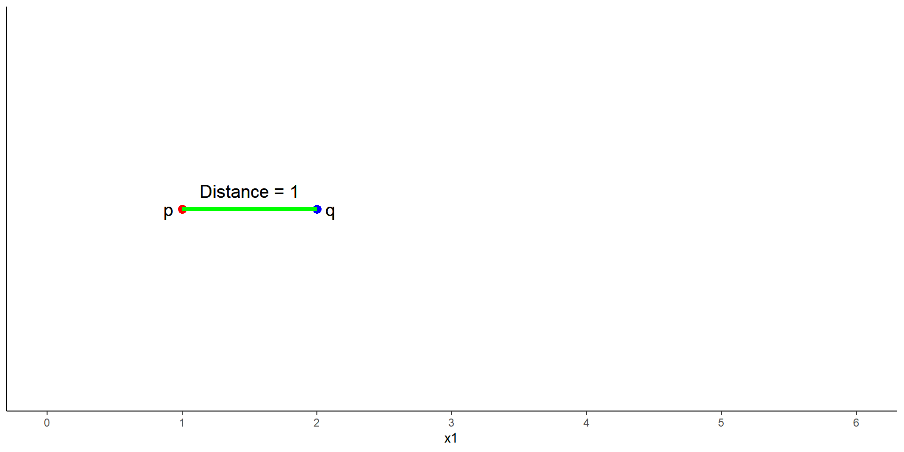N-dimensional generalization for n features:
\(Distance = \sqrt{(q1 - p1)^2 + (q2 - p2)^2 + ... + (qn - pn)^2}\)
Manhattan distance is also referred to as city block distance
- Travel down the “A” street for 1 unit
- Travel down the “B” street for 3 units
- Total distance = 4 units
For two features/dimensions
\(Distance = |A + B|\)
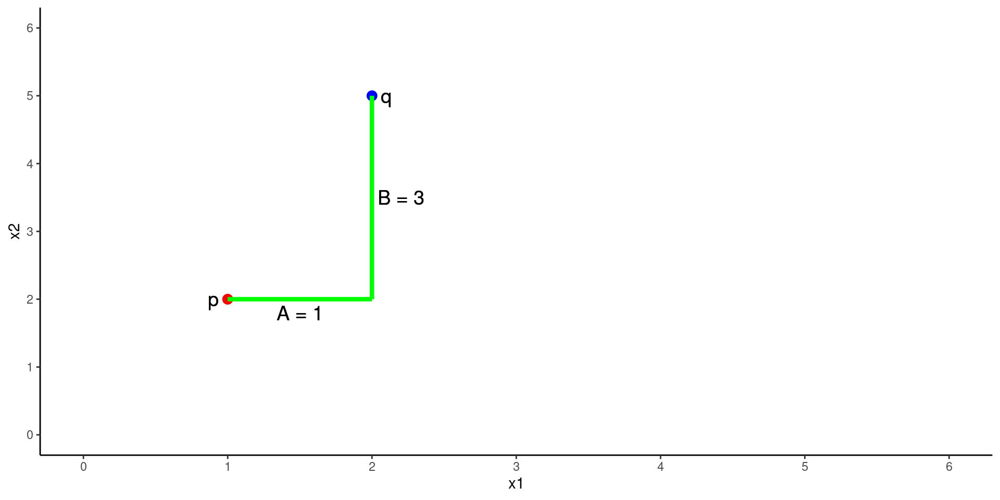kknn() uses Minkowski distance (see Wikipedia or less mathematical description)
- It is a more complex parameterized distance formula
- This parameter is called
p, referred to asdistanceinkknn()
- This parameter is called
- Euclidean and Manhattan distances are special cases where
p= 2 and 1, respectively - The default p in kknn() = 2 (Euclidean distance)
- This default (like all defaults) can be changed when you define the algorithm using
nearest_neighbor()
Scaling X
Distance is dependent on scales of all the features. We need to put all features on the same scale
- Scale all features to SD = 1 (using
step_scale(all_numeric_predictors())) - Range correct [0, 1] all features (using
step_range(all_numeric_predictors()))
Categorical Predictors
KNN requires numeric features (for distance calculation).
- For categorical predictors, you will need to use dummy coding or other feature engineering that results in numeric features.
- e.g.,
step_dummy(all_nominal_predictors())
KNN with Ames Housing Prices
Let’s use KNN with Ames
- Train a model using only numeric predictors and
overall_qualas numeric - Use the default
k = 5algorithm - Set SD = 1 for all features
- Remember to take advantage of these selectors for easier code! See
?has_rolefor more details
- prep, bake
- Skim training features. Note all SD = 1
| Name | feat_trn |
| Number of rows | 1465 |
| Number of columns | 6 |
| _______________________ | |
| Column type frequency: | |
| numeric | 6 |
| ________________________ | |
| Group variables | None |
Variable type: numeric
| skim_variable | n_missing | complete_rate | mean | sd | p0 | p25 | p50 | p75 | p100 | skew | kurtosis |
|---|---|---|---|---|---|---|---|---|---|---|---|
| gr_liv_area | 0 | 1 | 2.95 | 1.00 | 0.86 | 2.21 | 2.84e+00 | 3.44 | 11.03 | 1.43 | 5.19 |
| lot_area | 0 | 1 | 1.24 | 1.00 | 0.18 | 0.92 | 1.15e+00 | 1.39 | 20.14 | 11.20 | 182.91 |
| year_built | 0 | 1 | 66.48 | 1.00 | 63.40 | 65.86 | 6.65e+01 | 67.45 | 67.79 | -0.54 | -0.62 |
| garage_cars | 0 | 1 | 2.33 | 1.00 | 0.00 | 1.31 | 2.62e+00 | 2.62 | 5.23 | -0.26 | 0.10 |
| overall_qual | 0 | 1 | 4.30 | 1.00 | 0.71 | 3.54 | 4.24e+00 | 4.95 | 7.07 | 0.20 | -0.03 |
| sale_price | 0 | 1 | 180696.15 | 78836.41 | 12789.00 | 129500.00 | 1.60e+05 | 213500.00 | 745000.00 | 1.64 | 4.60 |
- Skim validation features. Note SD. Why not exactly 1?
| Name | feat_val |
| Number of rows | 490 |
| Number of columns | 6 |
| _______________________ | |
| Column type frequency: | |
| numeric | 6 |
| ________________________ | |
| Group variables | None |
Variable type: numeric
| skim_variable | n_missing | complete_rate | mean | sd | p0 | p25 | p50 | p75 | p100 | skew | kurtosis |
|---|---|---|---|---|---|---|---|---|---|---|---|
| gr_liv_area | 0 | 1 | 2.92 | 0.95 | 0.94 | 2.24 | 2.81 | 3.38 | 7.05 | 0.92 | 1.16 |
| lot_area | 0 | 1 | 1.28 | 1.27 | 0.21 | 0.92 | 1.17 | 1.44 | 26.32 | 15.64 | 301.66 |
| year_built | 0 | 1 | 66.47 | 1.04 | 63.23 | 65.90 | 66.61 | 67.45 | 67.79 | -0.66 | -0.41 |
| garage_cars | 0 | 1 | 2.27 | 0.99 | 0.00 | 1.31 | 2.62 | 2.62 | 5.23 | -0.24 | 0.22 |
| overall_qual | 0 | 1 | 4.28 | 0.98 | 0.71 | 3.54 | 4.24 | 4.95 | 7.07 | 0.00 | 0.35 |
| sale_price | 0 | 1 | 178512.82 | 75493.59 | 35311.00 | 129125.00 | 160000.00 | 213000.00 | 556581.00 | 1.42 | 2.97 |
- Fit 5NN
error_val <- bind_rows(error_val,
tibble(model = "5 numeric predictor 5nn",
rmse_val = rmse_vec(feat_val$sale_price,
predict(fit_5nn_5num, feat_val)$.pred)))
error_val# A tibble: 8 × 2
model rmse_val
<chr> <dbl>
1 simple linear model 51375.
2 4 feature linear model 39903.
3 4 feature linear model with YJ 41660.
4 6 feature linear model w/ms_zoning 39846.
5 7 feature linear model 34080.
6 8 feature linear model w/interaction 32720.
7 10 feature linear model w/interactions 32708.
8 5 numeric predictor 5nn 32837.- Not bad!
KNN also mostly solved the linearity problem
- We might be able to improve the linear models with better transformations of X and Y
- However, this wasn’t needed for KNN!
But 5NN may be overfit. k = 5 is pretty low
Again with k = 20
# A tibble: 9 × 2
model rmse_val
<chr> <dbl>
1 simple linear model 51375.
2 4 feature linear model 39903.
3 4 feature linear model with YJ 41660.
4 6 feature linear model w/ms_zoning 39846.
5 7 feature linear model 34080.
6 8 feature linear model w/interaction 32720.
7 10 feature linear model w/interactions 32708.
8 5 numeric predictor 5nn 32837.
9 5 numeric predictor 20nn 30535.- That helped some
One more time with k = 50 to see where we are in the bias-variance function
# A tibble: 10 × 2
model rmse_val
<chr> <dbl>
1 simple linear model 51375.
2 4 feature linear model 39903.
3 4 feature linear model with YJ 41660.
4 6 feature linear model w/ms_zoning 39846.
5 7 feature linear model 34080.
6 8 feature linear model w/interaction 32720.
7 10 feature linear model w/interactions 32708.
8 5 numeric predictor 5nn 32837.
9 5 numeric predictor 20nn 30535.
10 5 numeric predictor 50nn 31055.- Too high, now we have bias……
- We will learn a more rigorous method for selecting the optimal value for \(k\) (i.e., tuning this hyperparameter) in unit 5
To better understand bias-variance trade-off, let’s look at error across these three values of \(k\) in train and validation for Ames
Training
- Remember that training error would be 0 for
k = 1 - Training error is increasing as \(k\) increases b/c it KNN is overfitting less (so its not fitting the noise in train as well)
Validation
- Validation error is first going down as \(k\) increases (and it would have been very high for
k = 1) - Bias is likely increasing a bit
- But this is compensated by big decreases in overfitting variance
- The trade-off is good for
k = 20relative to 5 and 1 - At some point, as \(k\) increases the increase in bias outweighed the decrease in variance and validation error increased too.
Let’s do one final example and add one of our nominal variables into the model: ms_zoning
- Need to collapse levels and then dummy
rec <-
recipe(sale_price ~ gr_liv_area + lot_area + year_built + garage_cars +
overall_qual + ms_zoning, data = data_trn) |>
step_impute_median(garage_cars) |>
step_mutate(overall_qual = as.numeric(overall_qual)) |>
step_mutate(ms_zoning = fct_collapse(ms_zoning,
"residential" = c("res_high", "res_med", "res_low"),
"commercial" = c("agri", "commer", "indus"),
"floating" = "float")) |>
step_dummy(ms_zoning) |>
step_scale(all_numeric_predictors())- prep, bake
- Fit
- evaluate
# A tibble: 11 × 2
model rmse_val
<chr> <dbl>
1 simple linear model 51375.
2 4 feature linear model 39903.
3 4 feature linear model with YJ 41660.
4 6 feature linear model w/ms_zoning 39846.
5 7 feature linear model 34080.
6 8 feature linear model w/interaction 32720.
7 10 feature linear model w/interactions 32708.
8 5 numeric predictor 5nn 32837.
9 5 numeric predictor 20nn 30535.
10 5 numeric predictor 50nn 31055.
11 5 numeric predictor 20nn with ms_zoning 30172.- Now it helps.
- Might have to do with interactions with other predictors that we didn’t model in the linear model
- KNN automatically accommodates interactions. Why?
- This model is a bit more complex and might benefit further from higher \(k\)
As a teaser, here is another performance metric for this model - \(R^2\). Not too shabby! Remember, there is certainly some irreducible error in sale_price that will put a ceiling on \(R^2\) and a floor on RMSE
Overall, we now have a model that predicts housing prices with about 30K of RMSE and accounting for 84% of the variance. I am sure you can improve on this!
Discussion
- Announcements
- Reprex
- Read new appendix
- We now expect reprex for help on application assignments
- Will review in lab next week
- Homework is basically same for unit 4
- New dataset - titanic
- Do EDA but we don’t need to see it
- Fit KNN and RDA models (will learn about LDA, QDA and RDA in unit)
- Submit predictions. Free lunch!
- Will know about first free lunch by next Thursday
- Course feedback in quiz as trial
- Questions
- What are two broad sources of error?
- What are two broad sources of reducible error?
- Why do we need independent validation data to select the best model configuration?
- What factors make the need for a validation set even greater?
- What is RMSE? Connect it to metric you already know? How is it being used in lm (two ways)?; in knn (one way)?
- How does bias and variance manifest when you look at your performance metric (RMSE) in training and validation sets?
- Will the addition of new predictors/features to a (lm?) model always reduce RMSE in train? in validation? Connect to concepts of bias and variance
- k
- What is it and how does it get used when making predictions?
- What is the impact of k on bias and variance/overfitting?
- k=1 - performance in train? in val?
- Interaction in KNN - Consider bias first (but also variance) in this example
- Simulate data
- Fit models for lm and knn with and without interaction
- Took some shortcuts (no recipe, predict back into train)
n <- 200
set.seed(5433)
d <- tibble(x1 = runif(n, 0,100), # uniform
x2 = rep(c(0,1), n/2), # dichotomous
x1_x2 = x1*x2, # interaction
y = rnorm(n, 0 + 1*x1 + 10*x2 + 10* x1_x2, 20)) #DGP + noise
fit_lm <-
linear_reg() |>
set_engine("lm") |>
fit(y ~ x1 + x2, data = d)
fit_lm_int <-
linear_reg() |>
set_engine("lm") |>
fit(y ~ x1 + x2 + x1_x2, data = d)
fit_knn <-
nearest_neighbor(neighbors = 20) |>
set_engine("kknn") |>
set_mode("regression") |>
fit(y ~ x1 + x2, data = d)
fit_knn_int <-
nearest_neighbor(neighbors = 20) |>
set_engine("kknn") |>
set_mode("regression") |>
fit(y ~ x1 + x2 + x1_x2, data = d)
d <- d |>
mutate(pred_lm = predict(fit_lm, d)$.pred,
pred_lm_int = predict(fit_lm_int, d)$.pred,
pred_knn = predict(fit_knn, d)$.pred,
pred_knn_int = predict(fit_knn_int, d)$.pred)- Predictions from linear model with and without interaction
d |>
ggplot(aes(x = x1, group = factor(x2), color = factor(x2))) +
geom_line(aes(y = pred_lm)) +
geom_point(aes(y = y)) +
ggtitle("lm without interaction") +
ylab("y") +
scale_color_discrete(name = "x2")
d |>
ggplot(aes(x = x1, group = factor(x2), color = factor(x2))) +
geom_line(aes(y = pred_lm_int)) +
geom_point(aes(y = y)) +
ggtitle("lm with interaction") +
ylab("y") +
scale_color_discrete(name = "x2")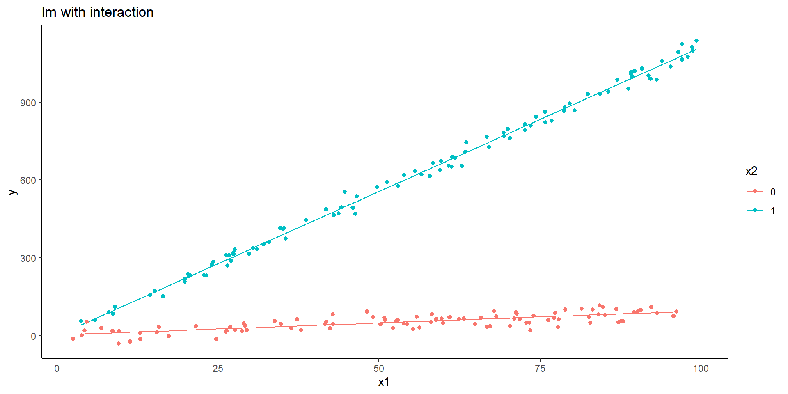
- Predictions from linear model with and without interaction
d |>
ggplot(aes(x = x1, group = factor(x2), color = factor(x2))) +
geom_line(aes(y = pred_knn)) +
geom_point(aes(y = y)) +
ggtitle("KNN without interaction") +
ylab("y") +
scale_color_discrete(name = "x2")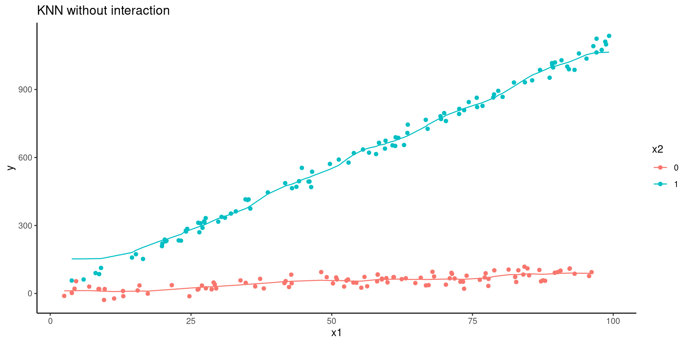
d |>
ggplot(aes(x = x1, group = factor(x2), color = factor(x2))) +
geom_line(aes(y = pred_knn_int)) +
geom_point(aes(y = y)) +
ggtitle("KNN with interaction") +
ylab("y") +
scale_color_discrete(name = "x2")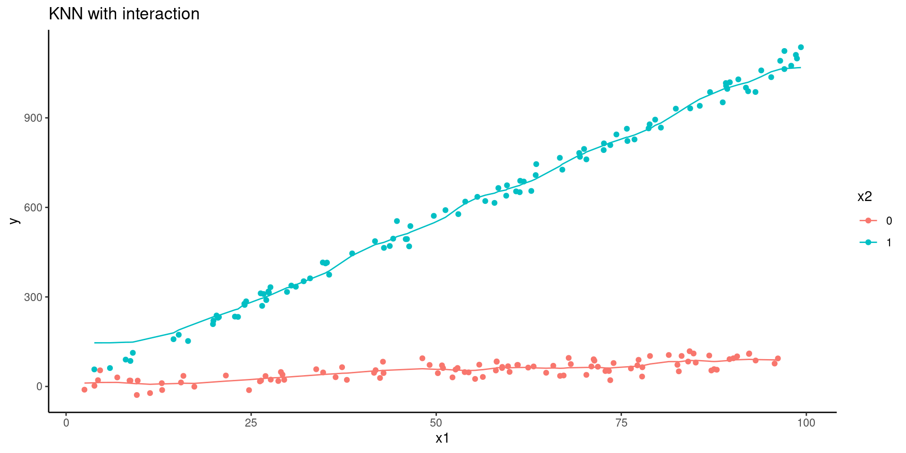
- What are implications of this for when to use flexible algorithm like knn vs. lm?
- if data are high dimensional?
- routine use?
- Transformations of numeric predictors
Use of
plot_truth()[predicted vs. observed]Residuals do not have mean of 0 for every \(\hat{y}\)
- Consequence: biased parameter estimates. Linear is bad DGP
- Also bad test of questions RE the predictor (underestimate? misinform)
Non-normal residuals
- Consequence: lm parameter estimates still unbiased (for linear DGP) but more “efficient” solutions exist
- Bad for prediction b/c higher variance than other solutions
- May suggest omission of variables
Heteroscasticity
- Consequence: Inefficient and inaccurate standard errors.
- Statistical tests wrong
- Poor prediction for some (where larger variance of resituals) \(\hat{y}\)
- higher variance overall than other solutions - bad again for prediction
Transformation of outcome?
- metric
- back to raw predictions
- KNN (black box) for explanatory purposes
- Visualizations (think of interaction plot above) make clear the effect
- Will learn more (better visualizations, variable importance, model comparisons) in later unit
- Exploration
- “I feel that I can come up with models that decrease the RMSE, but I don’t have good priors on whether adding any particular variable or observation will result in an improved model. I still feel a little weird just adding and dropping variables into a KNN and seeing what gets the validation RMSE the lowest (even though because we’re using validation techniques it’s a fine technique)”
- Exploration is learning. This is research. If you knew the answer you wouldn’t be doing the study
- Domain knowledge is still VERY important
- Some algorithms (LASSO, glmnet) will help with feature selection
- staying organized
- Script structure
- Good documentation - RMD as analysis notebook
- Some overfitting to validation will occur? Consequence? Solutions?
- LM vs. KNN better with predictors or overall
- “Why do some features seem to improve performance more in linear models or only in KNNs?”
- “What are some contexts where KNN doesn’t work well? In other words, what are the advantages/disadvantages of using KNN?”
- Always comes down to bias vs. variance
- Flexibility and N are key moderators of these two key factors.
- k? - impact on bias, variance?
“In GLM, why correlation/collinearity among predictors will cause larger variance? Is it because of overfitting?”
“Curse of dimensionality” - Bias vs. variance
- Missing features produce biased models.
- Unnecessary features or even many features relative to N produce variance
- Does your available N in your algorithm support the features you need to have low bias.
- Mostly an empirical question - can’t really tell otherwise outside of simulated data. Validation set is critical!
- Flexible models often need more N holding predictors constant
- Regularization (unit 6) will work well when lots of predictors